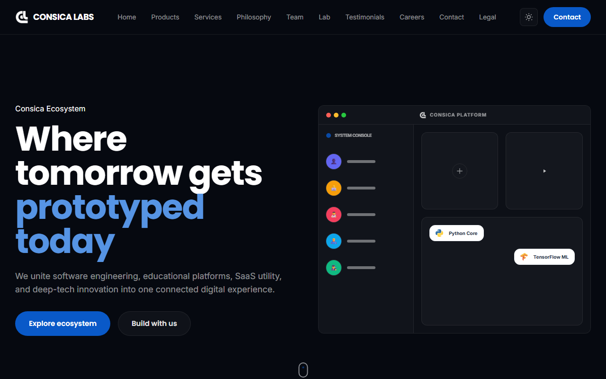

Live site — consicalabs.com

Open live site ↗01·Company / Product Ecosystem
Consica Labs
A technology company building software and educational systems.
Consica Labs Pvt. Ltd. is Bikram Adhikari’s technology company, focused on software, AI, EdTech, SaaS, school systems, LMS products, robotics, innovation labs, mobile applications, and web applications.
View case study